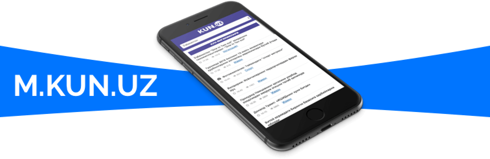

Sayt haqida
«KUN.UZ» - Oʼzbekistondagi eng faol onlayn nashrlardan biri. Sayt oʼz oldiga Oʼzbekiston va jahonda roʼy berayotgan eng muhim voqea-hodisalar haqida tezkor, aniq va xolis axborot berishni maqsad qilib qoʼygan.
Google Analytics maʼlumotlariga koʼra, saytga har kuni 350 ming kishi tashrif buyuradi.
Saytdan foydalanish mutlaqo bepul boʼlib, faqatgina internet traffik sarflanadi. Saytning yengil va tez ishlaydigan mobil versiyasi - m.kun.uz

Facebook , Twitter , Instagram , Odnoklassniki ijtimoiy tarmoqlarida sahifalar, Telegram messenjerida esa @KunUzOfficial nomli kanal faoliyat yuritadi.
Android va iOS qurilmalari uchun mo‘ljallangan mobil dasturlari ham mavjud. Ularni Google Play va App Store’dan yuklab olish mumkin.
Loyiha 2012 yilning yanvarida faoliyatini boshlagan. OAV sifatida 0987 raqami bilan davlat ro‘yxatidan o‘tgan. Loyiha muassisi «WEB EXPERT» MChJ hisoblanadi.
Sayt O‘zbekiston Respublikasi hududida faoliyat olib boruvchi davlat va jamoat tashkilotlari bilan qonunda belgilangan tartibda hamkorlik o‘rnatgan holda ish olib boradi.
«KUN.UZ» sayti materiallaridan foydalanish shartlari
«KUN.UZ» sayti tahririyati mavjud qonunchilikka ko‘ra saytda nashr etilgan, qoidalar asosida ko‘chirib bosilgan ma’lumotlar asosliligi uchun (manbasi ko‘rsatib yozilganligi evaziga) javobgarlikni o‘z zimmasiga olmaydi.
Saytda nashr qilingan maqola yuzasidan, uning muallifi va sayt tahririyatining fikri bir xil bo‘lmasligi mumkin.
Shuningdek, sayt tahririyati o‘quvchilarining yuborgan xatlarining har biriga alohida javob yozish majburiyatini olmaydi.
Sayt materiallaridan boshqa saytlar yoki OAV foydalanishi shartlari:
Sayt O‘zbekiston Respublikasi hududida, mintaqa va chet ellarda faoliyat yuritayotgan internet saytlari, nashrlar bilan o‘zaro ma’lumot, maqolalar almashishni yo‘lga qo‘yadi.
Saytdagi ma’lumotlardan faqat tahririyatdan yozma ravishda ruxsat olingandagina foydalanish talab etiladi.
Materiallardan foydalanishda, sayt nomini (muallifini) berilayotgan materialning birinchi yoki uchinchi qatorigacha bo‘lgan hududda taqdim etish so‘raladi.
Masalan, «Bu haqda KUN.UZ sayti xabar berdi».
Bu o‘rinda nashr nomi — «KUN.UZ» so‘ziga havola qo‘yilib, bu havola http://kun.uz/ sahifasiga yo‘naltirilgan bo‘lishi, qolaversa, «xabar beradi» so‘z birikmasiga havola qo‘yilib, bu havola «KUN.UZ» saytidan olingan xabarga yo‘naltirilgan bo‘lishi kerak.
Boshqa nashrlar bilan hamkorlikda ishlashdan doim mamnun bo‘lamiz.
Murojaat uchun:
tel: +998 55 500 11 99 (Qo‘ng‘iroqlar haftaning dushanbadan juma kuniga qadar soat 10:00 dan 17:00 gacha qabul qilinadi)
pochta: info@kun.uz
Reklama bo‘limi:
tel: +998 55 500 11 22 (Qo‘ng‘iroqlar soat 09:00 dan 18:00 gacha qabul qilinadi)
pochta: reklama@kun.uz